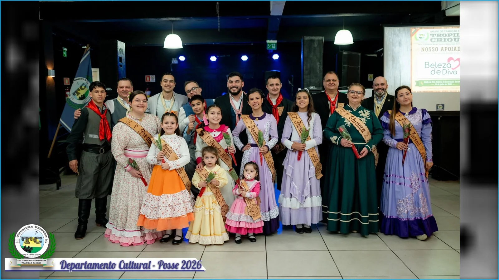

Depto. Cultural · Gestões Culturais
Departamento Cultural - Gestão 2026/2027
As prendas, os peões e as bonequinhas de galpão que representam o Tropilha.

Nesta página estão os integrantes do Departamento Cultural na gestão 2026/2027, cadastrados no Concurso Cultural Interno de 2026. Eles representam o Tropilha em eventos, concursos e na vida cultural do galpão.
Primeiro vêm as prendas e depois os peões, em cada categoria dos mais novos para os mais velhos. Para ver mais fotos, use os álbuns do Concurso Cultural e da Cerimônia de Posse.
Álbum
Integrantes da gestão
Prendas
Bonequinha de Galpão
- Maithê Mattos Muniz da Cunha
- Mariana Pail
Prenda Pré-Mirim
- Agatha Nogueira Fernandes de Mattos
Prenda Mirim
- Laura Silveira Maciel
- Pyetra Rafaelli Barcelos Robalos
Prenda Juvenil
- Pietra dos Santos Fernandes
Prenda Xiru
- Fabiana Burzlaff Berta Lemes
- Carla Schultz Stiborski
Peões
Peão Mirim
- Nicolas Junior Domingues
Peão Juvenil
- Felipe Almeida da Rosa
Peão Adulto
- Klint Burzlaff Berta Lemes
- Anderson Farias de Oliveira
- Bernardo Schultz Stiborski
Peão Veterano
- William dos Santos Pail
Peão Xiru
- Sérgio Antônio Stiborski
- José Ernani Barcelos Lemes
Fotos